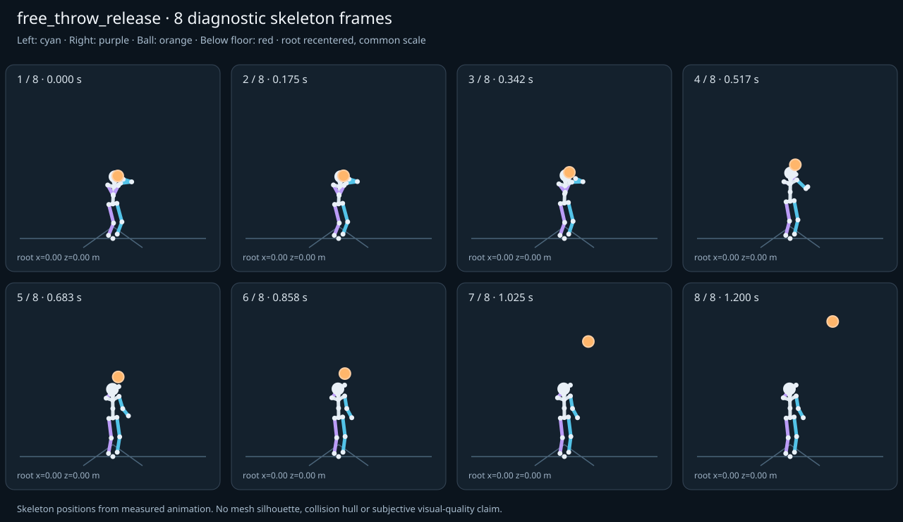

כל הקליפים · תצוגת התנועה · JSON מקורי
ציון 92 · כיסוי 100%
נתוני motion-qa-v1 המקוריים; עיצוב הדוח בלבד הותאם לחבילה. נקודות הסוליה נמדדות בתרחיש שחקן חיצוני מוצהר; Root בנכס נשאר קבוע.

| מדד | מצב | ערך | ציון | ראיות |
|---|---|---|---|---|
| החלקת רגליים | ירוק | 0.000002 | 100 | ראיות המדידה{
"coordinateSpace": "native GLB plus explicitly declared external actor position and heading, applied once",
"supportSource": "declared",
"windows": 2,
"samples": 290,
"maxDriftMeters": 0.000003,
"p95SpeedMetersPerSecond": 0.000261,
"worst": {
"bone": "LeftFoot",
"t": 0.483333,
"start": 0,
"end": 1.2,
"driftMeters": 0.000003
}
} |
| חדירה לרצפה | ירוק | 0.000034 | 99.86 | ראיות המדידה{
"samples": 2900,
"floorY": 0,
"probeKind": "declared sole probes plus skeletal joint centers (no mesh surfaces)",
"maxDepthMeters": 0.000058,
"worst": {
"t": 0.55,
"bone": "LeftFoot",
"depthMeters": 0.000058,
"y": -0.000058
}
} |
| קפיצות פוזה | ירוק | 0.571977 | 88.56 | ראיות המדידה{
"adjacentPairs": 144,
"observations": 2448,
"maxDegrees60Hz": 8.579654,
"maxMarkerStepHeight60Hz": 0.020943,
"maxRootStepHeight60Hz": 0,
"worst": {
"ratio": 0.5719769121655431,
"t": 0.566667,
"previousTime": 0.558333,
"bone": "LeftHand",
"markerStepHeight60Hz": 0.020943,
"degrees60Hz": 8.579654
}
} |
| חריגות אנטומיות | ירוק | 0 | 100 | ראיות המדידה{
"testedFrames": 145,
"affectedFrames": 0,
"checks": 2465,
"maxLimbFlexionDegrees": 115.845483,
"maxRelativeSegmentLengthChange": 0,
"hingeDirectionChecked": true,
"axialTwistChecked": false,
"violations": []
} |
| מגע בכדור | ירוק | 0.000361 | 99.52 | ראיות המדידה{
"radiusMeters": 0.12,
"samples": 128,
"missed": [],
"contacts": [
{
"t": 0.65,
"bone": "RightHand",
"gapMeters": 0.00061,
"signedGapMeters": 0.00061,
"centerDistanceMeters": 0.12061,
"contactPoint": [
-0.034774,
1.630643,
0.287884
],
"ballCenter": [
-0.035,
1.751253,
0.287563
],
"declaredLocalPoint": true
},
{
"t": 0.616667,
"bone": "RightHand",
"gapMeters": 0.000603,
"signedGapMeters": 0.000603,
"centerDistanceMeters": 0.120603,
"contactPoint": [
-0.034702,
1.608164,
0.286842
],
"ballCenter": [
-0.035,
1.728765,
0.286438
],
"declaredLocalPoint": true
},
{
"t": 0.683333,
"bone": "RightHand",
"gapMeters": 0.000597,
"signedGapMeters": 0.000597,
"centerDistanceMeters": 0.120597,
"contactPoint": [
-0.03485,
1.648839,
0.288692
],
"ballCenter": [
-0.035,
1.769436,
0.288472
],
"declaredLocalPoint": true
},
{
"t": 0.583333,
"bone": "RightHand",
"gapMeters": 0.000568,
"signedGapMeters": 0.000568,
"centerDistanceMeters": 0.120568,
"contactPoint": [
-0.034648,
1.58189,
0.285576
],
"ballCenter": [
-0.035,
1.702457,
0.285123
],
"declaredLocalPoint": true
},
{
"t": 0.716667,
"bone": "RightHand",
"gapMeters": 0.000563,
"signedGapMeters": 0.000563,
"centerDistanceMeters": 0.120563,
"contactPoint": [
-0.034916,
1.66253,
0.289274
],
"ballCenter": [
-0.035,
1.783092,
0.289155
],
"declaredLocalPoint": true
},
{
"t": 0.25,
"bone": "RightHand",
"gapMeters": 0.000536,
"signedGapMeters": -0.000536,
"centerDistanceMeters": 0.119464,
"contactPoint": [
-0.034986,
1.303704,
0.271238
],
"ballCenter": [
-0.035,
1.423168,
0.271158
],
"declaredLocalPoint": true
},
{
"t": 0.216667,
"bone": "RightHand",
"gapMeters": 0.000521,
"signedGapMeters": -0.000521,
"centerDistanceMeters": 0.119479,
"contactPoint": [
-0.034994,
1.292283,
0.270638
],
"ballCenter": [
-0.035,
1.411762,
0.270588
],
"declaredLocalPoint": true
},
{
"t": 0.283333,
"bone": "RightHand",
"gapMeters": 0.000501,
"signedGapMeters": -0.000501,
"centerDistanceMeters": 0.119499,
"contactPoint": [
-0.034973,
1.319598,
0.272074
],
"ballCenter": [
-0.035,
1.439097,
0.271955
],
"declaredLocalPoint": true
},
{
"t": 0.55,
"bone": "RightHand",
"gapMeters": 0.0005,
"signedGapMeters": 0.0005,
"centerDistanceMeters": 0.1205,
"contactPoint": [
-0.034626,
1.552525,
0.284116
],
"ballCenter": [
-0.035,
1.673024,
0.283651
],
"declaredLocalPoint": true
},
{
"t": 0.75,
"bone": "RightHand",
"gapMeters": 0.0005,
"signedGapMeters": 0.0005,
"centerDistanceMeters": 0.1205,
"contactPoint": [
-0.034965,
1.671814,
0.289655
],
"ballCenter": [
-0.035,
1.792314,
0.289616
],
"declaredLocalPoint": true
},
{
"t": 0.658333,
"bone": "RightHand",
"gapMeters": 0.00046,
"signedGapMeters": 0.00046,
"centerDistanceMeters": 0.12046,
"contactPoint": [
-0.034832,
1.635756,
0.288055
],
"ballCenter": [
-0.035,
1.756215,
0.287811
],
"declaredLocalPoint": true
},
{
"t": 0.625,
"bone": "RightHand",
"gapMeters": 0.000456,
"signedGapMeters": 0.000456,
"centerDistanceMeters": 0.120456,
"contactPoint": [
-0.034778,
1.614312,
0.287046
],
"ballCenter": [
-0.035,
1.734768,
0.286738
],
"declaredLocalPoint": true
},
{
"t": 0.641667,
"bone": "RightHand",
"gapMeters": 0.000455,
"signedGapMeters": 0.000455,
"centerDistanceMeters": 0.120455,
"contactPoint": [
-0.03483,
1.625565,
0.28754
],
"ballCenter": [
-0.035,
1.746019,
0.287301
],
"declaredLocalPoint": true
},
{
"t": 0.183333,
"bone": "RightHand",
"gapMeters": 0.00045,
"signedGapMeters": -0.00045,
"centerDistanceMeters": 0.11955,
"contactPoint": [
-0.034998,
1.285063,
0.270261
],
"ballCenter": [
-0.035,
1.404613,
0.270231
],
"declaredLocalPoint": true
},
{
"t": 0.691667,
"bone": "RightHand",
"gapMeters": 0.000448,
"signedGapMeters": 0.000448,
"centerDistanceMeters": 0.120448,
"contactPoint": [
-0.034888,
1.652829,
0.28883
],
"ballCenter": [
-0.035,
1.773276,
0.288664
],
"declaredLocalPoint": true
},
{
"t": 0.608333,
"bone": "RightHand",
"gapMeters": 0.000447,
"signedGapMeters": 0.000447,
"centerDistanceMeters": 0.120447,
"contactPoint": [
-0.034775,
1.602076,
0.286425
],
"ballCenter": [
-0.035,
1.722522,
0.286126
],
"declaredLocalPoint": true
},
{
"t": 0.675,
"bone": "RightHand",
"gapMeters": 0.000447,
"signedGapMeters": 0.000447,
"centerDistanceMeters": 0.120447,
"contactPoint": [
-0.034887,
1.644864,
0.288429
],
"ballCenter": [
-0.035,
1.76531,
0.288266
],
"declaredLocalPoint": true
},
{
"t": 0.591667,
"bone": "RightHand",
"gapMeters": 0.000432,
"signedGapMeters": 0.000432,
"centerDistanceMeters": 0.120432,
"contactPoint": [
-0.034738,
1.588926,
0.285814
],
"ballCenter": [
-0.035,
1.709357,
0.285468
],
"declaredLocalPoint": true
},
{
"t": 0.708333,
"bone": "RightHand",
"gapMeters": 0.000424,
"signedGapMeters": 0.000424,
"centerDistanceMeters": 0.120424,
"contactPoint": [
-0.034937,
1.659679,
0.289094
],
"ballCenter": [
-0.035,
1.780103,
0.289005
],
"declaredLocalPoint": true
},
{
"t": 0.316667,
"bone": "RightHand",
"gapMeters": 0.000423,
"signedGapMeters": -0.000423,
"centerDistanceMeters": 0.119577,
"contactPoint": [
-0.034953,
1.339901,
0.27314
],
"ballCenter": [
-0.035,
1.459478,
0.272974
],
"declaredLocalPoint": true
}
],
"contactDetailsTruncated": true,
"coordinateSpace": "native GLB plus explicitly declared external actor position and heading, applied once"
} |
| כניסה ויציאה מול המתנה | אדום | 3.274432 | 47.71 | ראיות המדידה{
"entry": {
"ratio": 3.142089658370393,
"t": 0,
"idleTime": 3.533333,
"markers": 17,
"rmsPositionHeight": 0.125684,
"rmsRotationDegrees": 73.653226,
"rmsVelocityHeightPerSecond": 0.003048,
"velocityEvaluated": true
},
"exit": {
"ratio": 3.2744317665016696,
"t": 1.2,
"idleTime": 1.866667,
"markers": 17,
"rmsPositionHeight": 0.130977,
"rmsRotationDegrees": 51.509355,
"rmsVelocityHeightPerSecond": 0.003033,
"velocityEvaluated": true
},
"worstEndpoint": "exit",
"alignment": "horizontal root translation; raw asset poses used when provided"
} |
| מהירות גוף מול צעדים | לא חל | — | — | ראיות המדידה{} |
| סימטריה | ירוק | 0 | 100 | ראיות המדידה{
"mode": "structural",
"modeSource": "declared",
"structuralMismatch": 0,
"segments": [
{
"segment": "Arm-ForeArm",
"mismatch": 0
},
{
"segment": "ForeArm-Hand",
"mismatch": 0
},
{
"segment": "UpLeg-Leg",
"mismatch": 0
},
{
"segment": "Leg-Foot",
"mismatch": 0
}
],
"motionRmsHeight": null,
"worstMotion": null,
"bilateralPoseRmsHeightUnscored": 0.162569,
"note": "One-sided authored actions are checked for structural symmetry only."
} |